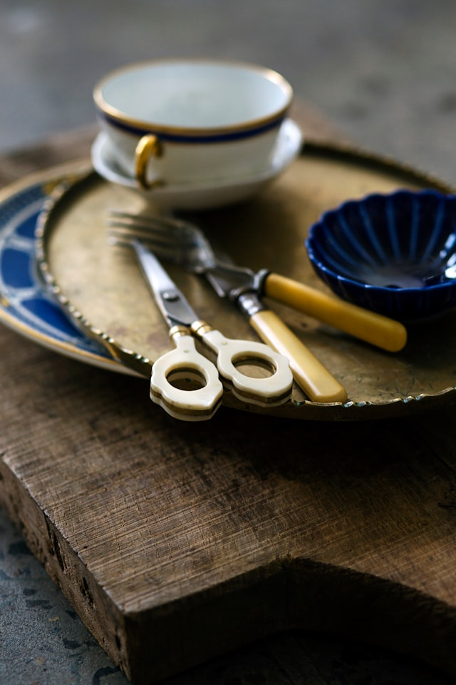
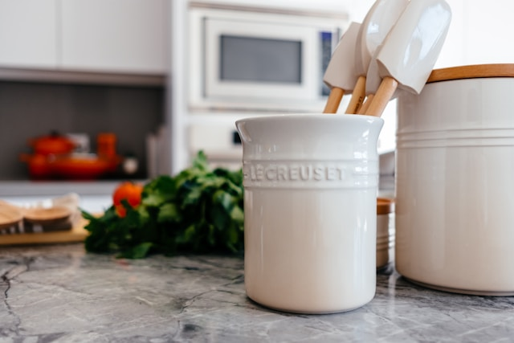
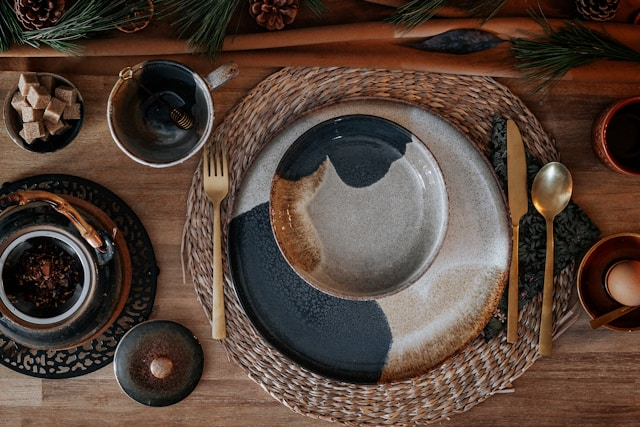
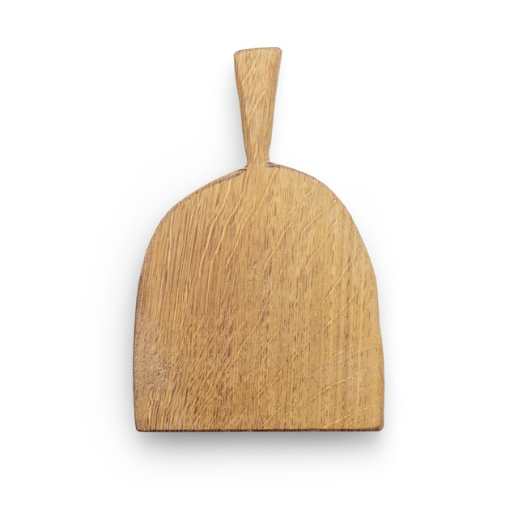

Discover our range of high-quality utensils designed to enhance your cooking experience. Browse through our selection and find the perfect tools for your kitchen.
| Product Image | Product Name | Description | Details> |
|---|---|---|---|
| Premium Chef's Knife |
This premium chef's knife is essential for every kitchen. Its sharp blade and ergonomic handle make meal preparation effortless. |
|
|
 |
Versatile Spatula Set |
This spatula set includes various sizes to handle all your cooking needs. Made from heat-resistant material for safe use. |
|
 |
Stylish Wooden Spoon |
This stylish wooden spoon is perfect for stirring and mixing. Its classic design complements any kitchen decor. |
|
 |
Durable Tongs |
These durable tongs are ideal for grilling and serving. Made from high-quality materials to ensure long-lasting use. |
|
| Elegent Measuring Cups |
These elegant measuring cups are essential for precise cooking. They come with clear markings and a sleek design. |
|
|
 |
Multifunctional Grater |
The multifunctional grater offers various grating options for your ingredients. Ideal for cheese, vegetables, and more. |
|
| Produce Name | Material | Heat Resistance | Dishwasher Safe |
|---|---|---|---|
| Premium Chef's Knife | Stainless Steel | N/A | Yes |
| Versatile Spatula Set | Silicone, Wood | 450°F | Yes |
| Stylish Wooden Spoon | Natural Wood | N/A | No (Hand wash) |
| Durable Tongs | Stainless Steel, Silicone | 500°F | Yes |
| Elegant Measuring Cup | Stainless Steel | N/A | Yes |
| Multifunctional Grater | Stainless Steel | N/A | Yes |
| Product | Price | Brand | In Stock |
|---|---|---|---|
| Premium Chef's Knife | $89 | KitchenPro | Yes |
| Versatile Spatula Set | $24 | CulinaryMaster | Yes |
| Stylish Wooden Spoon | $12 | HomeChef | Yes |
| Durable Tongs | $18 | GrillMaster | No |
| Elegant Measuring Cups | $28 | PrecisionBake | Yes |
| Multifunctional Grater | $22 | ChefTool | Yes |
If you have any questions about our utensils, please feel free to email us.